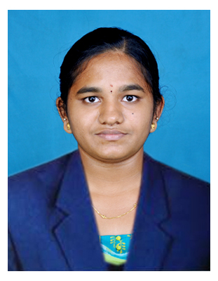

Darunika Babu
Career Objective
My goal is to explore and refine all my skills, seizing opportunities to advance my career while contributing to
the continuous growth of the organization. I am committed to personal development and eager to
contribute meaningfully to our collective success, embracing challenges as opportunities for growth. With
dedication and a passion for learning, I aim to exceed expectations, fostering an environment where both
personal and organizational growth flourish.
Education
B.Tech-IT
K.S.R College of Engineering
(Autonomous)
Tiruchengode
HSC
Vani Vidyalaya Matric Higher Secondary School Uppupalayam
SSLC
Vani Vidyalaya Matric Higher Secondary School Uppupalayam
Skills
Python
Java
AWS
HTML&CSS
JavaScript
Git/GitHub
Hobby
Drawing
Cooking
Projects
Title:Smart Street Light System
Explanation
The aim of the project is to save electricity. We absorbed through the vehicle passing, when the vehicle comes under the street li ht it detects the vehicle passing and the light turn on the light.
Title:
Efficient Wireless Communication Enhancement Through Carrier-Less Amplitude and Phase Modulation in Li-Fi
Explanation
This project investigates the enhancement of wireless communication through CAP modulation in Li-Fi technology, highlighting its superior performance and potential applications.
Area of Interest
Cloud Development
Computer Networks
Contact Information
E-mail:ceitdarunikab25@gmail.com
Address:3/303, Thaneerpandalpalayam, Kumarapalayam (T.K) Namakkal (D.T)-637304
Phone:8807801294
Linkedin:Linkedin